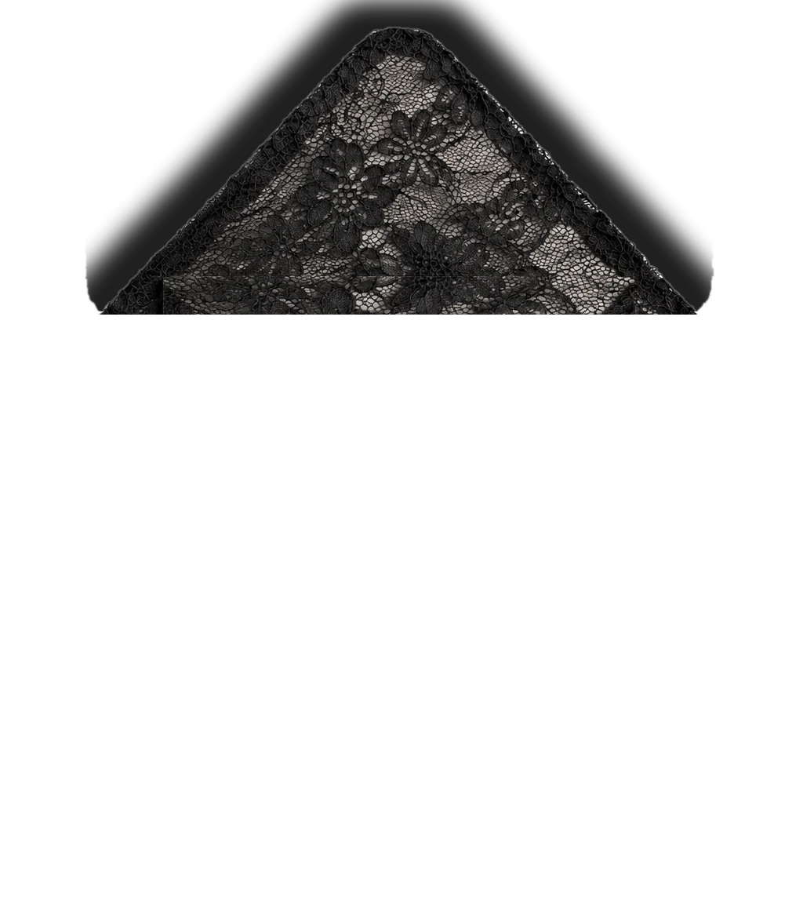

portfolio
Designing it,
seeing it,
making it real.
Portfolio
graphic &
editorial designerNatalia Makienko2026
Magazines
zines
websitesSaint Petersburg
Designing it,
seeing it,
making it real.
Portfolio
graphic &
editorial designerNatalia Makienko2026
Magazines
zines
websitesSaint Petersburg



[заглушка: что нужно было сделать]
[заглушка: как решала]
[заглушка]